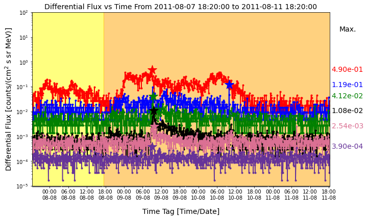
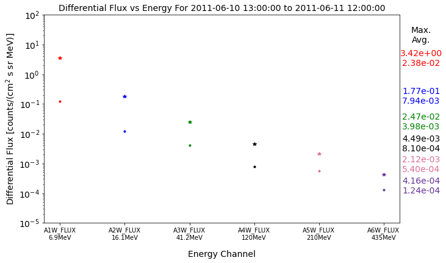
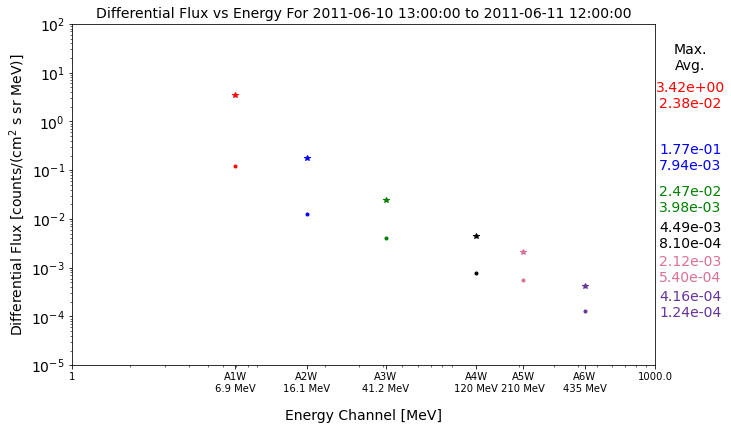
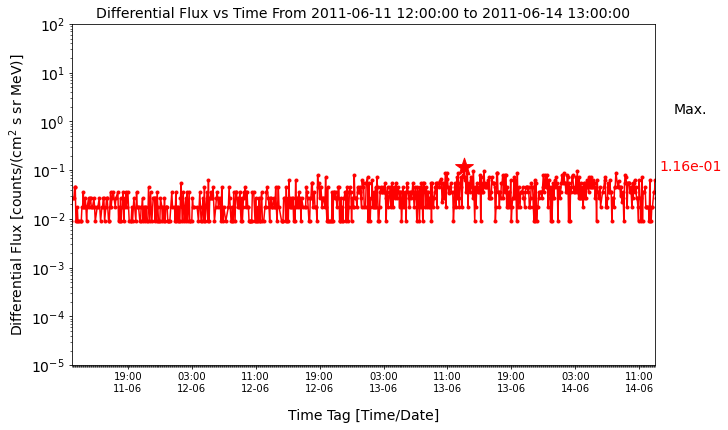
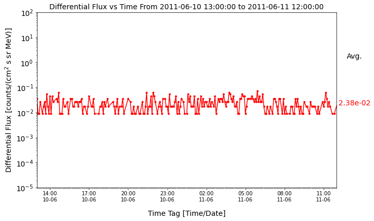

Various graphs made for various events. In total there were 115 events my code plotted.
Each colored line represents an energy channel on the GOES13 satellite. The peaks are marked by stars. This plot combines the 1 day background period (yellow), with the 3 day event period (orange).
This graph shows the energy and flux against Energy Channel (MeVs).
This graph is similar to the previous one, but the Energy Channels are placed according to their MeV value on a log scale, so it is clear which sensors have what values.
 These graphs show the event and the background for one channel.
It then downloads the data to be used for plotting and other analysis.
datadownloaderhome.py scrapes the database from the ./avg directory on https://www.ngdc.noaa.gov/stp/satellite/goes/dataaccess.html
combinedeventplotter.py makes the "combined" plots that have the background and the event
fluxplotter.py makes the plots that show the flux and energy for the 6 channels